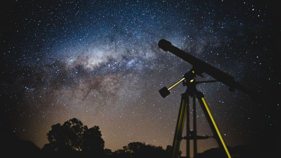

@CristianMoraru
Student FMI
@CristianMoraru
Student FMI
Astronomica
Ce este "Astronomica"?
"Astronomica©" este un site dedicat descoperirii si invatarii a tot ceea ce tine de spatiul cosmic, Universul in care ne aflam, avand la baza studiul astronomei, ridicandu-se la asteptarile numelui.
De ce astronomie?
Astronomia este una dintre cele mai vechi stiinte studiate de catre om, astfel incat chiar si civilizatiile timpurii au studiat cu uimire cerul noptii, cosmosul afectandu-le considerabil cultura, credinta, dar si intelegerile stiintifice. Navigatorii au folosit dintotdeauna astrele pentru a-si orienta drumul in calatoriile lor.
Astronomie (din grecescul ἀστρονομία / ástronomía, care s-a format din ἄστρον / astron, „stea” și -νομία / -nomia din νόμος / nomos, „lege”) înseamnă „legea stelelor”. Astronomia nu trebuie confundată cu astrologia, pseudoștiința conform căreia pozițiile relative ale obiectelor cerești ar putea oferi informații despre personalitatea, relațiile umane și alte probleme legate de viața umană. Deși cele două domenii au o origine comună, acum sunt complet distincte. Astronomia observațională poate fi clasificată în funcție de regiunea corespunzătoare a spectrului electromagnetic pe care sunt făcute observațiile. Unele părți ale spectrului pot fi observate de pe suprafața Pământului, în timp ce alte părți sunt observabile doar de la altitudini mari sau din afara atmosferei Pământului. Informații specifice despre aceste subdomenii sunt prezentate mai jos.
Sursa: Wikipedia
